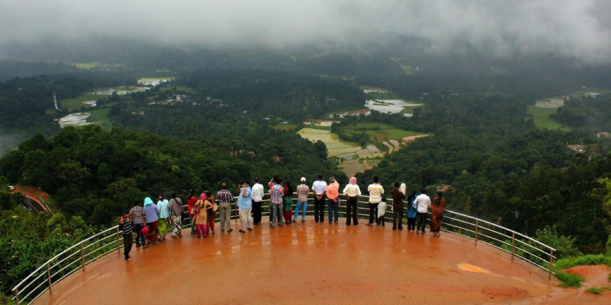
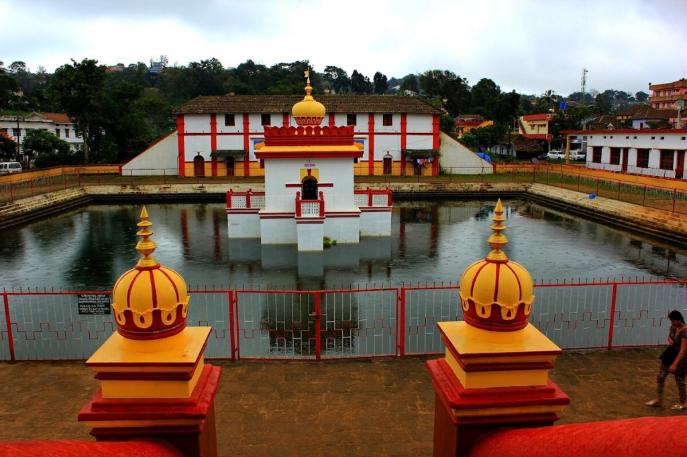
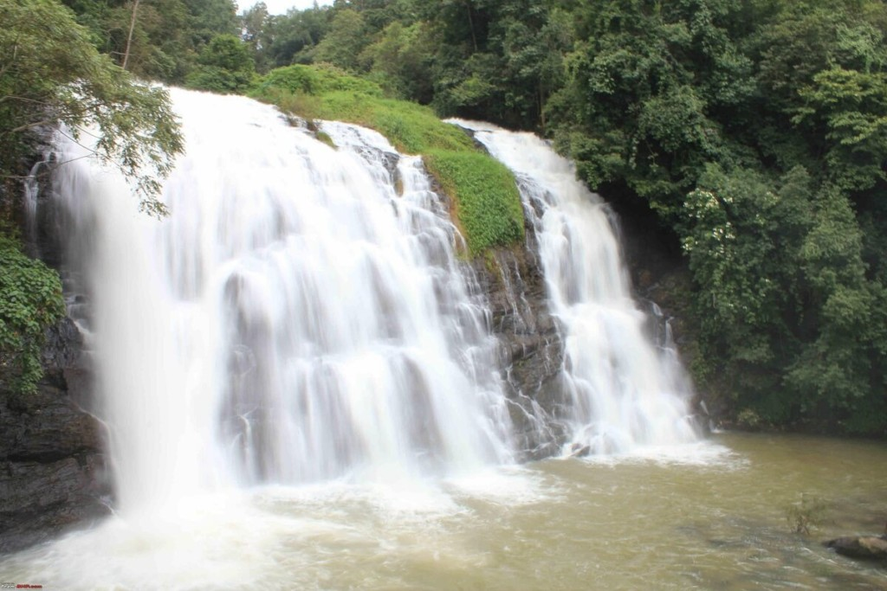

1 / 3

Caption one
2 / 3

Caption Two
3 / 3

Caption Three
3 / 3
Caption four
3 / 3

Caption five
Coorg is a very well – known hill station in Karnataka, also known as the Scotland Of India! This enchanting place gets a new fresh look at the seasonal waterfall and rainy season of July and August.
For those who love water sports and water activities, it’s amongst the best destinations. It’s also a natural paradise with lush greenery, water flowing all around and flowers blossoming. Those who love to capture nature at its best; this too is one of the best times around the year to do so.
it is one of the best tourist attraction place in India. Magical mountains, awesome wind, salubrious environment, and rich fragrance of coffee and cardamom farms will immerse your feelings as you step into this charming mountain place of Karnataka.
The Abbey Falls is one of the most wonderful falls in South India, situated 10 km. away from Madikeri. This wonderful falls flowing from spectacular mountains of the Western Ghats, with misty in the backdrop, is a beauty to behold for some time.
Of all vacationer locations in Coorg, Iruppu fountain is one of the most well-known. Stream Lakshmana Tirtha takes a 60 feet drop amidst the green mountains to turn into these falls. The attractive view of the ferns along with the gushing audio of the falls makes for an unforgettable encounter.